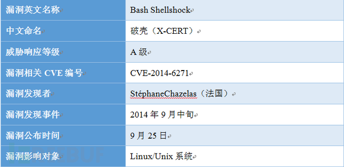

shellshock破壳漏洞（CVE-2014-6271）
简介：
Shellshock, also known as Bashdoor, is a family of security bugs in the widely used Unix Bash shell, the first of which was disclosed on 24 September 2014. Many Internet-facing services, such as some web server deployments, use Bash to process certain requests, allowing an attacker to cause vulnerable versions of Bash to execute arbitrary commands. This can allow an attacker to gain unauthorized access to a computer system. Stéphane Chazelas contacted Bash's maintainer, Chet Ramey, on 12 September 2014 telling Ramey about his discovery of the original bug, which he called "Bashdoor". Working together with security experts, he soon had a patch as well. The bug was assigned the CVE identifier CVE-2014-6271. It was announced to the public on 24 September 2014 when Bash updates with the fix were ready for distribution. The first bug causes Bash to unintentionally execute commands when the commands are concatenated to the end of function definitions stored in the values of environment variables. Within days of the publication of this, intense scrutiny of the underlying design flaws discovered a variety of related vulnerabilities, (CVE-2014-6277, CVE-2014-6278, CVE-2014-7169, CVE-2014-7186, and CVE-2014-7187); which Ramey addressed with a series of further patches. Attackers exploited Shellshock within hours of the initial disclosure by creating botnets of compromised computers to perform distributed denial-of-service attacks and vulnerability scanning. Security companies recorded millions of attacks and probes related to the bug in the days following the disclosure. Shellshock could potentially compromise millions of unpatched servers and other systems. Accordingly, it has been compared to the Heartbleed bug in its severity.
靶场环境